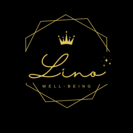

Lino Well-being ｜ 無料メールレター
流される毎日から、自分で選ぶ人生へ
ちゃんと頑張っている。
家族のことも、仕事のことも、人間関係も。
その時々で、できることを精一杯やってきた。
それなのに、ふとした瞬間に思うことはありませんか。
「私は本当はどうしたいんだろう」
「このままの生き方でいいのかな」
「人に合わせることはできるのに、自分の本音がわからない」
「頑張っているのに、なぜか心が満たされない」
このメールレターは、そんな方が自分の内側にある声に気づき、流される人生から、自分で選ぶ人生へ戻っていくための無料メールレターです。
私たちは日々、たくさんの役割の中で生きています。
母として。
妻として。
仕事をする人として。
誰かの期待に応える人として。
その中で、いつの間にか「自分はどうしたいのか」を後回しにしてしまうことがあります。
本当は嫌だったこと。
本当は言いたかったこと。
本当は選びたかったこと。
それを置き去りにしたまま頑張り続けると、自分の気持ちがだんだん見えにくくなっていきます。
だから必要なのは、もっと頑張ることではありません。
一度立ち止まり、自分の本音に耳を傾ける時間です。
このメールレターでは、日々の暮らしの中で自分の心を見つめ直すヒントをお届けします。
難しい理論ではなく、日常の中で使える、地に足のついた内容をお届けします。
益田 千穂
Lino Well-being 主宰。
ライフ・コーチング／アドラー心理学。
35年勤めた会社を退職し、独立。
私は幼い頃から、生きる意味について考えることがありました。
自分は何のために生まれてきたのか。
自分の存在には意味があるのか。
そんな問いを、心のどこかに抱えて育ってきました。
高校生の頃、図書館でアルバイトをしていた時に心理学の本と出会い、アドラー心理学に触れました。
その考え方に出会った時、心の中にあったものが少しほどけたような感覚がありました。
どんな人にも尊さがあること。
自分の意見や感情を大切にしていいこと。
人と関わりながら、自分らしく生きる道はあること。
その後、心理学やコーチングの学びを日々の生活や子育てに取り入れる中で、答えは誰かに与えられるものではなく、自分の中に見つけていくものなのだと感じるようになりました。
このメールレターでは、あなたが自分の中にある答えに気づき、自分の人生のハンドルを少しずつ取り戻していくための言葉を届けていきます。
メールレターにご登録いただくと、次のような内容をお届けします。
自分を変えようと無理に頑張るのではなく、本来の自分に戻っていくための時間として読んでいただけたら嬉しいです。
流される人生から、自分で選ぶ人生へ。
その一歩は、いきなり大きく変わることではありません。
まずは、自分の心の声に気づくことから始まります。
あなたの人生の答えは、誰かの中ではなく、あなた自身の中にあります。
人生のハンドルを、自分の手に取り戻す。
その小さな一歩を、ここから一緒に始めていきましょう。